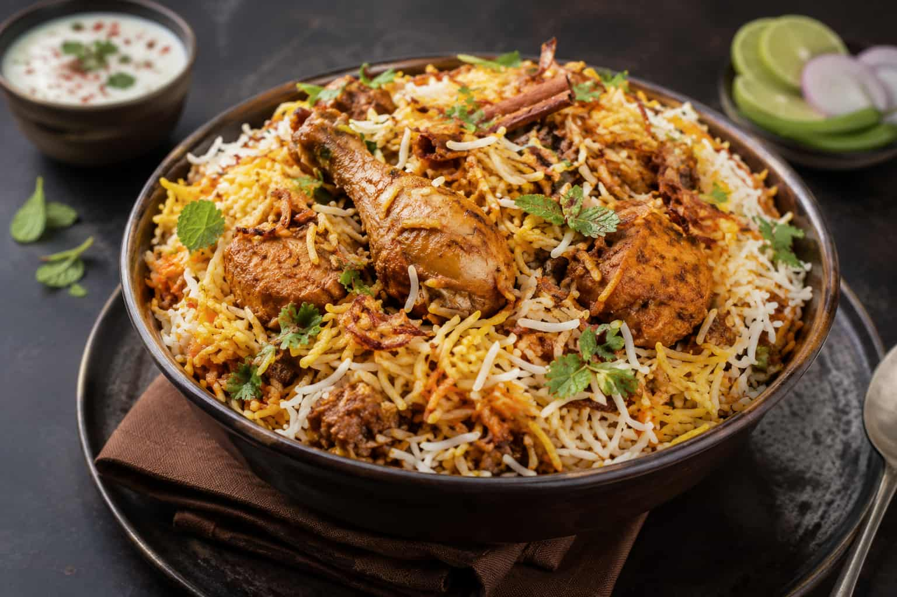

Why Krishnagiri Biryani is Famous

Krishnagiri biryani is known for its unique spices, tender meat, and rich flavour that makes it different from any other biryani in Tamil Nadu.
Want to make Krishnagiri biryani at home? Check our complete Krishnagiri Biryani Recipe!
Also check out the Best Restaurants in Krishnagiri!
Top Places to Eat Biryani in Krishnagiri
1. Noor Hotel ⭐ 4.2
One of the most loved biryani spots in Krishnagiri! Noor Hotel is located on Stadium Road, Wahab Nagar and is famous for its amazing taste and value for money biryani! A must visit for biryani lovers in Krishnagiri!
📍 Stadium Road, Wahab Nagar, Krishnagiri
📞 +91 95974 23290
2. Sibaa Restaurants ⭐ 4.0
A hidden gem in Krishnagiri! Sibaa Restaurants is famous for its mutton biryani with generous portions of tender and juicy mutton pieces. Located on Salem Main Road, this is a must visit for biryani lovers in Krishnagiri!
📍 Salem Main Road, New Pet, Krishnagiri
📞 +91 94435 29696
⏰ 9:00 AM to 10:00 PM daily
3. Aasife Biryani ⭐ 4.2
A popular biryani restaurant in Krishnagiri located near the Rayakottai Flyover! Aasife Biryani is known for its aromatic biryani with perfectly balanced spices, tender meat and generous portions. Open daily from 11 AM to 11 PM!
📍 Near Rayakottai Flyover, Anna Arch, Somarpettai, Londenpet, Krishnagiri
⏰ 11:00 AM to 11:00 PM daily
4. Hotel Mangalam Non Veg A/C ⭐ 4.0
One of the most popular non vegetarian restaurants in Krishnagiri with over 7000 reviews! Famous for its outstanding mutton biryani made with seeraga samba rice!
📍 Near Fly Over, Rayakotta Road, Londenpet, Krishnagiri
📞 +91 73390 97543
⏰ 8:30 AM to 10:30 PM daily
5. Salem RR Biryani ⭐ 3.7
Located on the Chennai-Bangalore Bypass near Krishnagiri, Salem RR Biryani is famous for its Chicken Bucket Biryani and Tandoori Chicken! A popular stop for travelers passing through Krishnagiri!
📍 Chennai-Bangalore Bypass, Kundarapalli, near Krishnagiri
⏰ 10:00 AM to 10:30 PM daily
Why Krishnagiri Biryani is Famous
Krishnagiri biryani is one of the most loved dishes in Tamil Nadu. Known for its unique spices, tender meat, and rich aromatic flavour, Krishnagiri biryani stands out from any other biryani in South India. Locals and tourists alike travel specifically to Krishnagiri just to taste this famous biryani!
History of Krishnagiri Biryani
The tradition of making biryani in Krishnagiri goes back many generations. Local chefs have perfected the recipe using fresh spices from the region, making Krishnagiri biryani a unique culinary experience that you cannot find anywhere else in Tamil Nadu.
Best Time to Eat Krishnagiri Biryani
The best time to enjoy Krishnagiri biryani is during lunch between 12pm and 3pm when the biryani is freshly cooked. Most popular biryani spots in Krishnagiri sell out quickly so arrive early!
Frequently Asked Questions About Krishnagiri Biryani
1. What makes Krishnagiri biryani special?
Krishnagiri biryani is special because of its unique blend of local spices and traditional dum cooking method. The use of seeraga samba rice gives it a distinctive aroma and flavour that is unlike any other biryani in Tamil Nadu!
2. Where is the best biryani in Krishnagiri?
The best biryani in Krishnagiri can be found at Noor Hotel on Stadium Road, Aasife Biryani near Rayakottai Flyover, and Hotel Mangalam on Rayakotta Road. All three are highly rated and serve authentic Krishnagiri style biryani!
3. What is the price of biryani in Krishnagiri?
Biryani in Krishnagiri is very affordable! Most biryani shops charge between ₹80 to ₹200 per plate depending on the type — chicken, mutton, or vegetarian biryani!
4. What time should I visit biryani shops in Krishnagiri?
The best time to eat biryani in Krishnagiri is during lunch between 12pm and 3pm when the biryani is freshly cooked. Popular shops sell out quickly so arrive early!
5. Is Krishnagiri biryani spicy?
Krishnagiri biryani has a medium spice level — not too mild and not too spicy! It has a rich aromatic flavour from the local spices that makes it absolutely delicious for everyone!